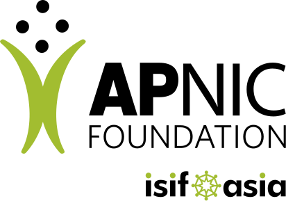
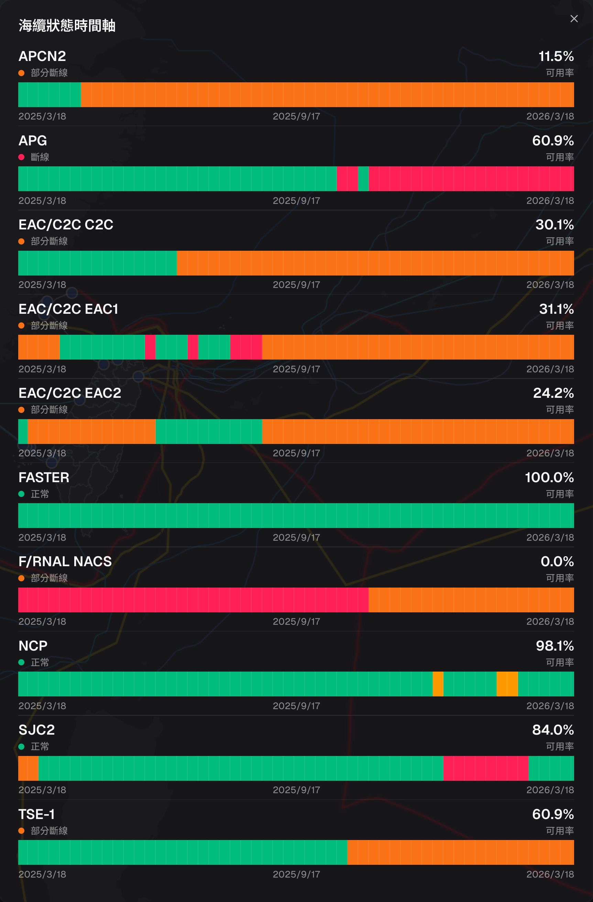
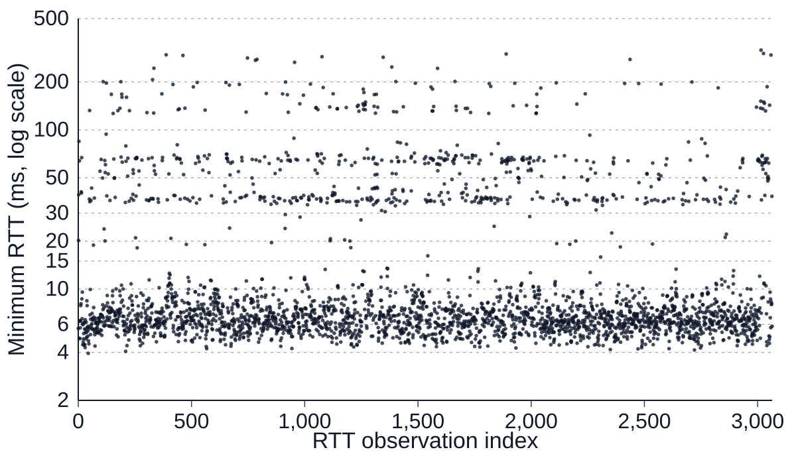
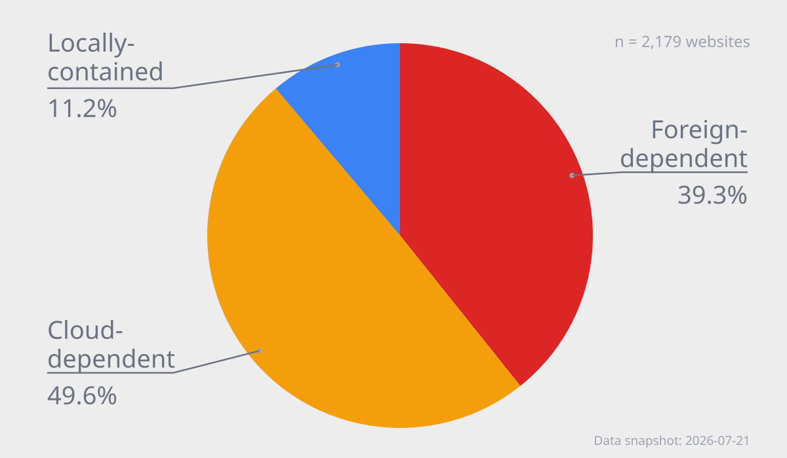
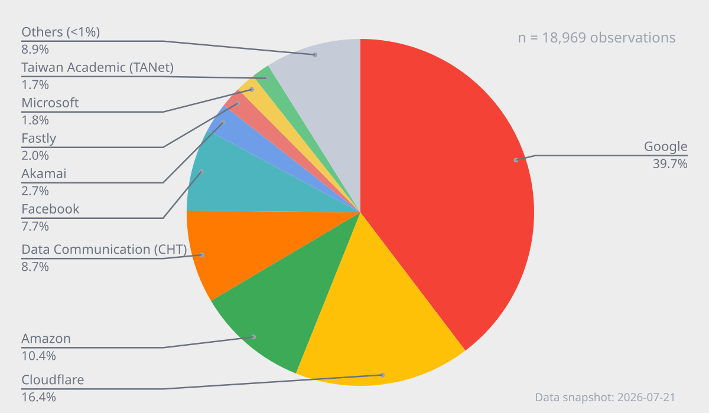

Irvin Chen (陳心一)
ORCID: https://orcid.org/0009-0002-1059-7130
Open Culture Foundation (ocf.tw)
MozTW, Mozilla Taiwan Community (moztw.org)
Published: 2026-05-22
Last Updated: 2026-07-22



This study examines the availability of everyday network services, when Taiwan experiences large-scale international submarine cable outages. By observing homepage resource requests in a browser, we trace where page dependencies originate and use that as a risk indicator.
The work focuses on two core questions: (1) how much websites commonly used in Taiwan depend on foreign-hosted resources, and (2) how much they depend on local (in-Taiwan) nodes of multinational cloud providers. We develop a measurement framework that turns the abstract risk of “what happens when cables go dark” into concrete dependency-structure analysis, which can inform policy and industry resilience planning.
Among 2,179 websites commonly used in Taiwan that we tested, 39.3% are “foreign-dependent” (Category 1), with foreign resource exposure and relatively high direct failure risk under cable-outage scenarios. Another 49.6% are “cloud-dependent”: no foreign resource exposure was observed, but they rely on local nodes of multinational public clouds, so actual availability when international connectivity fails is highly uncertain.
Taiwan is a highly digitalized society; the Internet and the information systems built on it are a critical foundation for how society operates. Digital dependence keeps growing: as of 2024, fixed broadband household penetration reached 74.5%1; mobile broadband penetration 87.12%; overall Internet usage rose from 67.2% in 2006 to 88.75%2.
From waking to sleep, people constantly use networked screens to access and exchange information. The network is embedded in daily life and social activity. Communications, commerce, media, logistics, and public and government services all rely on digital systems online.
High connectivity means any sizable, sustained network outage can significantly impact the economy and society.
When someone opens an app (e.g. Line, the most popular messaging app in Taiwan, with over 98.2% usage rate1) on a phone and sends a message, a chain of network requests is triggered.
First, the app asks the OS to connect; the device queries the carrier DNS for the target server IP (e.g. Line). After obtaining the address, it opens a TCP/IP connection and sends the request.
Data leaves the phone over wireless to a nearby cell site, then enters the carrier’s fiber backbone and core. Because Line’s main servers are abroad (Japan), traffic is routed to an international gateway—e.g. Tamsui or Toucheng cable landing stations—and crosses submarine cables overseas.
After reaching the destination country, traffic lands again and enters a cloud provider’s data center (e.g. AWS, Google Cloud, Azure). The app server processes the request; the response returns along a similar path and is rendered by the OS and the app.
This often completes in a fraction of a second. Unnoticed by users, data may travel thousands of kilometers round-trip between Taiwan and Japan—or tens of thousands of kilometers to another continent and back.
More importantly, one tap on an app or site can trigger dozens or hundreds of parallel requests, each repeating the above pattern. Most everyday digital services are effectively cross-border systems; “instant” interaction depends heavily on international links and submarine cables.
As noted, many sites and apps used daily depend on foreign resources and international connectivity. Losing external connectivity would likely break most digital services.
As an island, over 99% of Taiwan’s external traffic relies on submarine cables3. Cable resilience therefore directly affects everyday service availability and broader societal resilience.
Submarine cables are multi-layer cables a few centimeters thick on the seabed, or buried one to three meters in shallow water. In busy shallow areas such as the Taiwan Strait, damage often comes from human activity—anchoring, fishing, dredging—and from natural wear, amplifier failure, earthquakes, landslides, and geopolitical risk. Human causes dominate cable damage in Taiwan4.
According to the Taiwan Submarine Cable Map (smc.peering.tw), Taiwan is almost always in a state where “at least one cable is impaired”5. Cable faults may be a chronic background condition, not rare exceptions.

Availability of all international submarine cables serving Taiwan, 2025/3/18–2026/3/18 (source: Taiwan Submarine Cable Map (smc.peering.tw), cable status timeline).Taiwan connects globally through fourteen international cables via landing stations at Tamsui, Bali, Toucheng, and Fangshan (another station is under construction in Dawu, Taitung), plus ten domestic cables to Penghu, Kinmen, Matsu, and other outlying islands6 (RNAL and FNAL are two systems on one physical cable; MODA counts them separately, yielding fifteen international systems in some counts).
Under normal conditions, the Internet’s meshing, redundancy, diversity, and connectivity let carriers reroute traffic over other cables when a few fail. Quality may drop without users noticing. However, when multiple cables fail together, bandwidth redundancy is quickly exhausted, causing severe congestion or large-scale outages affecting communications, logistics, government operations, and digital systems7.
According to repair-time benchmarks published by the Ministry of Digital Affairs8, average repair time is about 32 days for international cables and about 110 days for domestic cables linking outlying islands. Disruptions can therefore last for months or even quarters, and contingency planning should assume a monthly rather than daily timescale.
A recent multi-cable failure occurred from 2025-12-25 to 2026-01-03: earthquakes off Yilan damaged six international cables (including EAC1, SJC2, PLCN, F/RNAL, EAC2, Apricot—nearly half of cables)4. Users reported slower networks and blocked apps, with repairs not completed until May 2026.
The 2006 Hengchun earthquakes remain a landmark case: on 2006-12-26 at 20:26 and 20:34, two magnitude-7 quakes off southwest Hengchun triggered many aftershocks. Mainland damage was relatively light, but underwater landslides broke four of six external cables at the time.
Taiwan’s international connectivity was severely disrupted. Initial call completion to the U.S. was about 40%; to China and Japan about 10%. China, Hong Kong, Japan, Korea, and Southeast Asia were also hit hard. Google, Yahoo, MSN, Gmail, Wikipedia, and other major services saw major outages across the region, affecting trade and finance.
Eight cable ships joined repairs; full restoration took nearly two months by mid-February 20079. The UN ISDR director called submarine cable damage from the quake a new modern-type disaster10.
Both events show that even without total blackout, simultaneous multi-cable failure can cause severe congestion and widespread service degradation.
The early 2023 Matsu outage is a real-world case of complete external cable loss for a region.
Two cables linking Matsu to Taiwan were damaged on 2023-02-02 and 2023-02-08 by Chinese fishing vessels, cutting regional Internet and telecom except for very limited microwave capacity (2 Gbps), leaving most residents unable to get online11. One cable (Taiwan–Matsu 3) was repaired after about 50 days at end of March.
Taiwan–Matsu 2 and 3 total about 1 Tbps. After 2023, microwave was expanded to 12 Gbps. When both cables failed again on 2025-01-15 and 2025-01-22, the larger microwave link kept some connectivity12.
At the beginning of the 2006 incident, Chunghwa Telecom reallocated capacity on the ST-1 communications satellite to support international telephone service, briefly restoring partial availability for international voice calls. If a similar-scale incident happened today, could satellites still serve as a substitute?
Under Taiwan Space Agency (TASA)'s “B5G LEO communications satellite program”13, Taiwan plans to launch two experimental LEO satellites before 2030 with a three-year design life.
Former TASA chair Tsung-Tsong Wu estimated that 24/7 nationwide LEO coverage would require at least 120 satellites, with roughly 40 replacements per year for a three-year lifetime—far above current plans, so it is hard to build substantive backup connectivity on that scale14.
Bandwidth also differs by orders of magnitude. A modern cable may carry hundreds of Tbps; Apricot is designed for 211 Tbps15. Starlink capacity was estimated around 20 Gbps in 2023 research—roughly 10,000× less per comparable unit; the full Starlink constellation (~3,300 satellites in 2023) was estimated around 20 Tbps total, comparable to one cable system16.
Even summing current LEO satellite bandwidth (Gbps class) cannot replace transoceanic cable throughput (Tbps class). TWNIC chair Kenny Huang compared cables to reservoirs and satellites to pipes12. Satellites can support emergency government or regional links, not national-scale replacement.
In 2006, the main economic impact of lost international connectivity was disrupted international telephone service—finance and select industries—with overseas internet services affecting only a minority of users.
In twenty years, dependence on the Internet has grown sharply. Taiwan’s international bandwidth grew from 147.7 Gbps in 2006 to 10.6 Tbps in 2026—nearly 70×17. In the mean time, average cable damage in Taiwan is about 5.1 times per year versus a global average of 0.1–0.2—roughly 25–50× higher risk3.
Deloitte (2016) estimated that a full national Internet outage in a highly digitalized country could cost about USD 23.6 million GDP per day per ten million people—roughly USD 55 million per day for Taiwan, or about USD 1.7 billion per month, before counting in semiconductor supply chain and cross-border finance spillovers18.
The same work notes that even partial outages or bandwidth reduction hurt productivity, transactions, information access, and confidence.
Taiwan is more Internet-dependent and faces more frequent cable damage risk. A 2006-scale event today would affect far more than niche industries, with broader societal impact and much harder emergency response and alternative routing than in 2006.
Public discussion of cable outages has increased, but often stays at “communications difficulties”—Line/Messenger/WeChat, Google, Gmail, Office 365—similar to 2006 framing.
Academic resilience work often focuses on infrastructure or intermediary layers: cable topology, routing, DNS1920, CDN and cloud centralization. That implies: if infrastructure is up and reachable, services work.
Routing is decentralized and imperfect; failures are routine. Policy constraints mean routing errors, misconfiguration, or node faults can cause large outages without physical cuts. Infrastructure health alone does not equal service availability21.
Even with spare cables, traffic reshaping, routing policy, or concentrated paths can still block communication—“physically connected” ≠ “actually reachable”22; redundancy alone does not guarantee cross-border availability23.
Modern stacks span infrastructure, logical, and application layers; societal impact exceeds any single operator. Resilience is a public-good problem across layers, operators, and borders7.
Indices such as the Internet Resilience Index use national infrastructure, performance, security, and market structure as proxies24 but do not directly measure whether sites people use daily still load when international connectivity is constrained.
Policy analyses focus on national infrastructure, topology, repair capacity, alternatives, and geopolitical risk—emphasizing bandwidth redundancy, path diversity, repair, and cooperation25.
Third-party dependency research (e.g. DNS, CDN, certificate authorities) highlights concentration and single points of failure26: over 89% of sites depend on third parties for critical functions; top three providers support over 90%27; multi-level indirect dependencies can amplify failures28.
Resilience must include service availability under constrained external connectivity and third-party state—not only physical reachability. This study emphasizes “service availability under constrained connectivity”, developing application-layer methods to ask which everyday digital services—and what share—could remain usable when external links fail, and how cable outages may affect network and societal resilience.
The challenge we face is not “will cables break?” but service collapse risk: in a highly digital, cloud-heavy, cross-border-dependent society, when external connectivity is severely impaired, which services keep basic function, which degrade, and which fail outright?
Past debate focused on bandwidth, physical damage, and backup communication methods. Modern services are not “a local server serving static HTML.” A “Taiwan” site or app may run on global cloud regions across datacenters and depend on hosts, CDNs, third-party JavaScript, login, payments, analytics, push, AI APIs, and other external components. Any critical piece abroad or reachable only via foreign paths can fail unexpectedly during cable outages.
Under severely congested or broken international links, repairing or rebuilding systems becomes harder.
Impact cannot be judged only by “how many spare cables remain.” Services may fail due to routing, DNS, congestion, cloud dependencies, or unreachable external assets even when the physical network is not fully down. Beyond connectivity, we need user-facing service availability measurements.
Without understanding real impact, we cannot prepare. This study turns “what happens when cables go dark” into measurable, comparable technical questions—filling an application-layer gap in resilience discourse. Through a test framework, it observes how commonly used services load, degrade, or fail when foreign connectivity is lost, providing evidence for backup design, resilience investment, and policy and social readiness.
When an island nation highly dependent on international networks (e.g. Taiwan) loses submarine cable connectivity—and thus much of the global Internet—how much do major domestic digital services continue to operate, degrade, or fail?
We aim to systematically test and count international-facing components in service operation—CDNs, third-party APIs, cloud platforms, external libraries—and map dependency structure and potential availability risk for commonly used services under foreign-network isolation.
The work should give government, industry, and civil society concrete evidence on systemic impact of external connectivity loss, supporting resilience strategy for digital services and critical public sectors.
Two core themes:
We do not directly verify full backend architecture or cloud control-plane dependencies. Analysis is based on observable resource requests during programmatic browser page loads; resource source distribution is a proxy for dependency structure.
Three concrete questions:
.gov.tw government websites, .edu.tw education websites, and general services) show systematic differences in local resilience?We compiled a high-traffic site list for Taiwan, including domestic and international services commonly used by locals. The target is “sites Taiwanese people use,” instead of “Taiwan sites”—so the list includes Google, Gmail, etc.
The unit of study is “websites” (Web), not direct equivalence to app availability. (OCF has related work on app connectivity resilience.)
There is no authoritative “sites Taiwanese people use” list. We merged:
.tw domains only.The test list merged_lists_tw.json was updated 2026-07-20 with 2,467 sites, sorted by traffic to reflect importance.
We also use manual_curated_list_tw.json to include manually selected open-source and digital-resilience community cases such as OCF, SITCON, and g0v.
Lists and scripts are open source in top-traffic-website-list-taiwan.
Tests used typical Taiwanese residential connectivity:
Site availability depends not only on establishing connections, but on fetching dependent resources (JavaScript, CSS, images, APIs). Modern sites combine resources from many domains; together they determine what users see and can do. Prior work uses headless browsers to analyze request behavior and third-party dependencies3027.
Building on dependency-exposure analysis from resource requests, we extend it to the systematic scenario of “international connectivity failure” and its impact on service availability.
Backend architecture, data paths, control planes, and internal cloud behavior are not directly observable externally. We do not attempt to map full system dependencies; we focus on observable front-end network requests and build operational metrics from them.
Two core metrics:
Foreign Dependency Exposure
Whether homepage requests include foreign-hosted resources—exposure to foreign networks at the resource layer.
Cloud Local Endpoint Exposure
Whether requests hit in-Taiwan nodes of multinational cloud providers—exposure to sites hosted on, or dependent on, domestic endpoints of global clouds.
These describe “dependency exposure structure” at the homepage front-end resource layer, not full system architecture or actual failure modes.
We can classify sites into three categories based on above metrics:
Foreign-dependent
Foreign resource exposure: homepage load directly depends on foreign resources. Most likely to be affected immediately when external connectivity fails—highest direct risk.
Cloud-dependent
No foreign resource exposure, but cloud local endpoint exposure: homepage loads do not directly request foreign resources, yet use resources from multinational clouds’ Taiwan nodes. Sites appear localized, but availability still depends on control planes, origins, authentication, and cache persistence—“surface-local, cross-border uncertainty”.
Locally-contained
No foreign resource exposure and no multinational-cloud Taiwan-node exposure in observable front-end requests. Higher chance of local operation, but not guaranteed full-system availability during external outages.
Tools and projects:
We developed web-resilience-test to open each target homepage site-by-site with a programmatic headless browser and record all resource connections during load.
For resources of each page, the tool aggregates request domains, filters known ad domains, and uses IPinfo / headers / LACeS anycast API31 / ping RTT to infer geographic and logical location (e.g. which public cloud provider).
Results are aggregated into summary tables.
no-global-connection-check.js tests one site:
Initialization
https://)Page load and request capture
request for all request metadata including headersRetries and errors
www. prefixRequest cleanup
blob: requestsDomain location
country=TW, log as domestic connectioncf-ray, x-amz-cf-pop, x-served-by, x-azure-ref, and x-msedge-ref (values containing TPE indicate a Taiwan PoP).locations includes Taiwan and confidence is confident (or higher), classify as domestic (see LACeS.md).RTT < 15ms, categorize it as a domestic resource.Note: we also built cloud_providers_tw.json from full request data for ASN mapping, open-sourced for other research and projects.
Classification and resilience metrics
domestic/cloud, domestic/direct, foreign/cloud, foreign/directorg is listed in cloud_providers_tw.json under providers_intl or providers_intl_without_known_taiwan_region/poptest-results/<site>.jsonErrors
test-results/_error/<site>.error.jsonCloudflare challenge: target site uses Cloudflare's challenge protection mechanism to prevent abuse.HTTP 4xxTimeoutRTT is the final stage of location classification: a public-cloud resource enters RTT only when IPinfo, response headers, and LACeS cannot determine its location. The test tool pings the resource five times and uses the minimum RTT; below 15 ms, it is classified as an international public-cloud node in Taiwan.
Across 2,179 successfully tested websites, the browser recorded 262,926 raw HTTP requests. After excluding advertising and other filtered items and deduplicating hostnames within each site, 19,046 resources remained for classification. Of these, 1,243 sites entered the RTT stage, covering 976 distinct hostnames and 3,640 observations; details are in the table below.
| Metric | Count | Share |
|---|---|---|
| Sites tested | 2,179 | |
| Sites with RTT fallback | 1,243 | 57.0% of sites tested |
| Resources to classify | 19,046 | |
| Entered RTT stage | 3,640 | 19.1% of resources to classify |
| RTT measured | 3,064 | 84.2% of RTT-stage resources |
| Min RTT < 15 ms | 2,394 | 78.1% of measured RTTs |
| Min RTT ≥ 15 ms | 670 | 21.9% of measured RTTs |
The distribution of the 3,064 measured RTTs is shown below. Each point is one successful measurement; the horizontal axis is an observation index, and the vertical axis is logarithmic. Values are bimodal; the 10–30 ms transition range holds 130 observations (4.2%).
Based on this distribution, we use a relatively conservative < 15 ms threshold within the sparse interval to classify a resource as domestic, reducing the risk of misclassifying a foreign resource as domestic.
| RTT range | Count | Share |
|---|---|---|
| 0–<5 ms | 206 | 6.7% |
| 5–<10 ms | 2,090 | 68.2% |
| 10–<15 ms | 98 | 3.2% |
| 15–<20 ms | 12 | 0.4% |
| 20–<30 ms | 20 | 0.7% |
| 30–<50 ms | 270 | 8.8% |
| 50–<100 ms | 247 | 8.1% |
| 100–<200 ms | 100 | 3.3% |
| ≥200 ms | 21 | 0.7% |

Changing the threshold to 10 ms or 20 ms affects only 32 website classifications: at 10 ms, 27 sites move from cloud-dependent to foreign-dependent; at 20 ms, 5 move from foreign-dependent to cloud-dependent. The number of locally-contained sites is unchanged.
| RTT threshold | Foreign-dependent | Cloud-dependent | Locally-contained | Sites reclassified |
|---|---|---|---|---|
| 10 ms | 883 (40.5%) | 1,053 (48.3%) | 243 (11.2%) | 27 (1.2%) |
| 15 ms | 856 (39.3%) | 1,080 (49.6%) | 243 (11.2%) | |
| 20 ms | 851 (39.1%) | 1,085 (49.8%) | 243 (11.2%) | 5 (0.2%) |
batch-test.js runs single-site tests over the list and writes test-results/statistic.tsv. From that batch output we derive overall foreign-dependency rates and per-resource resilience status.
We use web-resilience-test-profile to compile individual static pages and host them at https://resilience.ocf.tw/ for public lookup of each site’s resilience (e.g. Will ocf.tw work if cables break?).
At ~2,000 sites, when running with default parallelism (4 parallel tests, 8 parallel static page compilations), it takes about 30–60 minutes to complete. The latest testing are published at web-resilience-test-result and resilience.ocf.tw.
Of 2,509 sites tested, 2,179 completed successfully.
Under our taxonomy: 39.3% are “foreign-dependent”, with foreign resource exposure and high direct failure risk under cable outage; 49.6% are “cloud-dependent”—no foreign resource exposure observed, but they rely on in-Taiwan multinational public-cloud nodes, so availability is highly uncertain; 11.2% are “locally-contained”, with no observed exposure and a higher chance of normal operation. Overall, 88.8% of sites warrant further attention as high-risk or high-uncertainty.

Foreign-dependent: sites hosted abroad or whose homepages request foreign resources—higher failure risk under cable outages.
Cloud-dependent: no direct foreign resource exposure, but loading pulls resources from multinational public clouds’ Taiwan nodes. Topologically domestic, yet control planes, origins, authentication, or cache persistence may still depend on foreign systems—“localized in appearance, uncertain in availability”.
Locally-contained: no observed exposure; the site appears domestic and does not request foreign resources—higher chance of continued operation.
| Category | Sites | Share |
|---|---|---|
| Foreign-dependent (foreign resource exposure) | 856 | 39.3% |
| Cloud-dependent (no foreign exposure; in-Taiwan nodes exposure) | 1,080 | 49.6% |
| Locally-contained (no observed exposure) | 243 | 11.2% |
| Total | 2,179 | 100.0% |
Among Category 2 (cloud-dependent) sites, requests to different international public-cloud nodes in Taiwan break down as follows:
Provider site counts are non-exclusive: one site may use more than one provider, so the rows must not be added to obtain a site total.
Of 1,323 sites with no foreign dependency, 965 use resources from GCP Taiwan nodes (72.9%).
If public-cloud services such as GCP cannot keep local nodes running during external network outages, the impact would be very high. Their resilience is a key factor in whether sites can continue operating during submarine-cable disruptions.
For resources requested from domestic and international nodes of multinational public clouds, we found the following distribution:
| Provider | Sites (domestic nodes) | Sites (international nodes) | Requests (domestic nodes) | Requests (international nodes) |
|---|---|---|---|---|
| 1,685 | 56 | 7,393 | 63 | |
| Cloudflare | 1,016 | 17 | 3,051 | 21 |
| Amazon | 512 | 309 | 1,382 | 522 |
| Akamai | 338 | 11 | 446 | 13 |
| Fastly | 6 | 257 | 6 | 369 |
| Microsoft | 140 | 77 | 196 | 143 |
A site may request both domestic and international nodes from the same provider, so the two columns overlap and must not be added to obtain a provider total.
For Google cloud resources, measured by request count, 7,393 of 7,456 Google requests were classified as domestic-node requests, or about 99.2%; 63 were international-node requests, or about 0.8%. This shows the practical value of CDN-based data localization, and makes the persistence of mirrored resources on Taiwan nodes a key factor in whether ordinary sites remain available when external links are congested or cut.
Public-cloud services with lower domestic resource shares should be further evaluated for full in-country mirroring, cache persistence, and contingency operations.
We analyzed commonly used sites’ domestic/foreign and cloud/non-cloud resource use, counting a site if it made at least one request of that type:
| Unit: sites & adoption rate | Domestic | Foreign | Total |
|---|---|---|---|
| Multinational public cloud | 1,881 (86.3%) | 754 (34.6%) | 1,910 (87.7%) |
| Non-cloud | 1,623 (74.5%) | 245 (11.2%) | 1,709 (78.4%) |
| Total | 2,140 (98.2%) | 856 (39.3%) |
87.7% of sites depend on multinational public-cloud resources: 86.3% use domestic public-cloud nodes, and 34.6% use foreign public-cloud nodes.
Among the 856 sites with foreign resource exposure, most also use domestic resources; only 39 use foreign resources exclusively, accounting for just 1.8% of all 2,179 sites. This shows the practical value of CDN contributions to data localization and benefits for service resilience.
Aggregating all resource requests by ASN shows that website dependencies are highly concentrated among large providers. Providers above 5% include Google, Cloudflare, Amazon, Chunghwa Telecom (CHT), and Facebook. Google has the highest share at 39.7%, followed by Cloudflare at 16.4% and Amazon at 10.4%.
Per-site inspection shows that Google resources mainly include services such as GTM, while Cloudflare provides infrastructure and services such as cdnjs JavaScript CDN and WAF. These common infrastructure services form key parts of contemporary internet-service resilience.

| Unit | Count | Share |
|---|---|---|
| 7,525 | 39.7% | |
| Cloudflare | 3,109 | 16.4% |
| Amazon | 1,979 | 10.4% |
| Data Communication (CHT) | 1,645 | 8.7% |
| 1,460 | 7.7% | |
| Akamai | 518 | 2.7% |
| Fastly | 375 | 2.0% |
| Microsoft | 346 | 1.8% |
| Taiwan Academic (TANet) | 321 | 1.7% |
| Yahoo | 115 | 0.6% |
| Oracle | 110 | 0.6% |
| Taiwan Fixed Network | 107 | 0.6% |
| New Century | 93 | 0.5% |
| OVH SAS | 81 | 0.4% |
| Automattic | 66 | 0.3% |
| Zenlayer | 60 | 0.3% |
| Incapsula | 54 | 0.3% |
| Yuan-Jhen Info | 44 | 0.2% |
| Magnite | 40 | 0.2% |
| Datacamp | 37 | 0.2% |
| Sony | 36 | 0.2% |
| Byteplus | 32 | 0.2% |
To assess the resilience of government and education sites, we first looked only at foreign resource connectivity:
gov.tw and *.gov.tw); 16 had foreign connectivity, or 6.8%.*.edu.tw); 34 had foreign connectivity, or 13.3%.| Type | Sites tested | Foreign dependencies | Share |
|---|---|---|---|
| Government | 235 | 16 | 6.8% |
| Education | 255 | 34 | 13.3% |
| All | 2,179 | 856 | 39.3% |
Government and education sites depend less on foreign resources than the overall population. This suggests that public-sector and academic-network environments have a stronger baseline for local availability, although full service resilience still requires checking backend dependencies and real usage workflows.
Based on this study’s findings, we identify the following policy and technical recommendations to improve the resilience of Taiwan’s overall digital services.
Overall, the main risk for websites commonly used in Taiwan does not come only from a small number of fully foreign-hosted services. It is more widely embedded in dependency structures involving foreign resources and Taiwan-based nodes of multinational public clouds. Resilience strategies should therefore go beyond asking whether a service is “in Taiwan,” and further examine whether its resource supply chain, cloud control planes, and critical user journeys can continue operating locally.
Main limitations:
This study observes the source locations of website requests, not full network paths such as traceroute, nor routes from abroad via VPN. Whether “domestic” resources or pages are anycast/CDN nodes still needs further testing.
“Foreign dependency” and “cloud dependency” here refer to front-end observable exposure, not full backend architecture. Even locally-contained sites by front-end metrics may still rely on foreign databases, APIs, or backend services. The 11.2% locally-contained group cannot be assumed to remain available during external outages.
Resources hosted on multinational clouds’ Taiwan nodes do not guarantee standalone operation during submarine-cable outages. Availability may still depend on foreign control planes, foreign origins, cache hit ratio and persistence, authentication/session mechanisms, and other factors.
This study does not perform live “cable-outage simulation” through VPN/DNS fault injection. It is a large-scale structural survey that estimates potential risk from dependency patterns, not an observation of actual degradation under forced isolation.
This study tests homepages only, not full user journeys such as login, transactions, browsing, or search. Results should therefore be treated as “initial availability” indicators.
Suggested follow-ups: